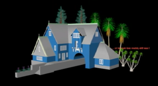
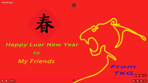
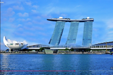
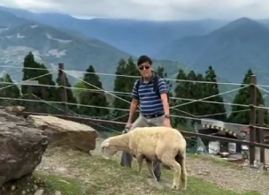
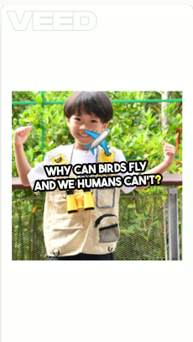
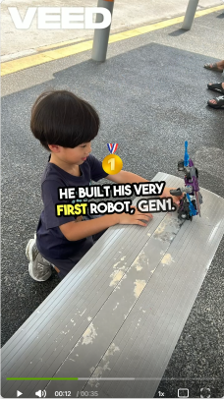
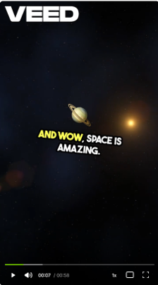

1
Plan the Message
Clarify the audience, purpose, story, format and key message before creating scenes.
Practical AI for Personal Growth and SME Efficiency

Turn an idea, a story, photographs or existing footage into a clear and engaging video.
AI video tools can support concept development, scene creation, narration, captions and editing. Traditional video-editing skills remain valuable for structure, pacing and final presentation.
There is no single best tool. TKG AI Hub helps you understand available options and choose a suitable video-creation workflow for your project.
A good video begins with a clear purpose and finishes with careful review—not simply with a powerful app.
Clarify the audience, purpose, story, format and key message before creating scenes.
Use suitable footage, images, AI generation, narration, music, captions and editing tools.
Check facts, permissions, captions, sound, pacing and final format before publishing.
Examples of earlier video work, showing planning, editing and personalised storytelling.

Stages of building construction rendered using 3D software.

A personalised greeting with the addressee’s and sender’s names.
A customised Christmas greeting video with personal names.

A light-hearted video imagining Marina Bay Sands buildings moving around.

A travel video recording the Taiwan trip experience.
Examples of AI-supported educational and imaginative video projects.

Turning a Bird Park visit into a science question for children.
An educational video to help children understand Singapore’s General Election.

An imaginative comparison between two robot-generation concepts.

An educational video to help children understand the Solar System.
Video tools change rapidly. Use these tables as a starting guide and check each provider’s current features, prices and commercial-use terms before deciding.
Each Watch Demo button opens an introductory video in a new tab. The button stays beside the tool name even when you scroll the table.
| Tool / Demo | Best for | How to access | Starting price | Core capabilities |
|---|---|---|---|---|
| Runway (Runway ML)▶ Watch Demo | Marketers, editors and filmmakers needing camera movement and reference controls. | Web browser, API. | Free credits; paid plans from about US$12/month. | AI generation, motion and camera controls, video editing, performance tools and brand-consistency features. |
| Kling AI (Kuaishou)▶ Watch Demo | Dialogue-led advertising and photorealistic human movement. | Web browser, API. | Free credits; paid plans from about US$10/month. | Human expressions, lip-sync, multi-shot storyboard features and higher-resolution outputs. |
| Google Veo (Google)▶ Watch Demo | Realistic physics, prompt adherence and synchronised audio. | Gemini/Google AI plans and Vertex AI. | Plan and region dependent. | Video with dialogue, ambient sound and music; reference, extend and transition workflows. |
| Seedance (ByteDance)▶ Watch Demo | Multi-shot stories, character consistency and product layouts. | Selected web hubs and API. | Credit- or API-based. | Audio-visual generation and support for product, text, lighting and identity consistency. |
| Pika (Pika Labs)▶ Watch Demo | Social creators wanting playful effects and fast transformations. | Web browser. | Free credits; paid plans from about US$10/month. | Scene and object transformations, first/last-frame transitions and talking-head performance features. |
| OpenAI Sora (legacy)▶ Watch Demo | Reference only; do not start a new long-term workflow. | Legacy API. | Not recommended for new use. | The Sora API is scheduled to permanently shut down on 24 September 2026. Official notice. |
| Luma Dream Machine (Luma Labs)▶ Watch Demo | Rapid visual brainstorming and smooth camera moves. | Web browser, API. | Paid plans from about US$9.99/month. | Fast rendering, draft mode, camera movement and character-reference support. |
| Hailuo AI (MiniMax)▶ Watch Demo | Creators seeking a budget-conscious option for expressive prompts. | Web browser, API. | Free credits; paid plans from about US$10/month. | Natural-looking movement and prompt-led short video generation. |
| Pixazo (AI Video Editor)▶ Watch Demo | Combining manual footage with AI-generated clips in one editing process. | Web browser. | Free credits; paid plans from about US$15/month. | Timeline editing, multi-model AI workspace, recording and translation tools. |
This comparison helps you identify the capabilities that matter for your project. It is not a guarantee of output quality or commercial rights.
| Tool / Demo | Input modes | Typical clip length | Camera control | Resolution | Audio and lip-sync | Commercial-use check | Starting price |
|---|---|---|---|---|---|---|---|
| Runway▶ Watch Demo | Text, image and video inputs. | About 5–10 seconds. | Yes; pan, zoom, tilt and motion tools. | Check current plan. | Audio and lip-sync depend on the workflow. | Review current plan terms; paid plans commonly include commercial rights. | From about US$12/month. |
| Kling AI▶ Watch Demo | Text, image and video inputs. | Up to about 15 seconds. | Broad camera-move variations. | Higher-resolution outputs may be available. | Native audio and lip-sync options. | Check paid-plan commercial-use terms. | Free credits / paid from about US$10/month. |
| Google Veo▶ Watch Demo | Text and image; video options vary by access route. | Short clips, with extension options. | Reference framing and transitions. | Supports selected high-resolution formats. | Native dialogue, ambience and music options. | Review Google plan and project terms. | Plan and region dependent. |
| Seedance▶ Watch Demo | Text, image, audio and video inputs. | About 4–15 seconds. | First/last-frame and transition options. | Up to 1080p in selected workflows. | Audio-visual generation and lip-sync options. | Check provider and hub terms. | Credit-based. |
| Pika▶ Watch Demo | Text, image and video inputs. | About 1–10 seconds. | Scene ingredients and first/last-frame tools. | Plan dependent. | Talking-head lip-sync in selected tools. | Check commercial-use terms. | Free / paid from about US$10/month. |
| OpenAI Sora (legacy)▶ Watch Demo | Legacy API workflow. | Not suitable for new work. | Not suitable for new work. | Not suitable for new work. | Not suitable for new work. | API shutdown scheduled for 24 September 2026. | Not recommended for new use. |
| Luma Dream Machine▶ Watch Demo | Image-led and text inputs. | About 5–10 seconds. | Smooth camera motion. | Check current plan. | Often silent generation; add sound in editing. | Check current commercial-use terms. | From about US$9.99/month. |
| Hailuo AI▶ Watch Demo | Text, image and video inputs. | Short clips. | Prompt-led movement. | Check current plan. | Sound may need to be added in editing. | Review provider terms and rights carefully. | Free / paid from about US$10/month. |
| Pixazo▶ Watch Demo | Depends on the model used. | Model dependent. | Timeline sequencing, cuts and trims. | Model dependent. | Add sound or voice-over in the timeline. | Review both Pixazo and underlying-model terms. | Free / paid from about US$15/month. |
For individuals or small enterprises who want a practical way to plan and create their own videos.
For people who would like help developing an educational, promotional or personalised video.
Before work begins, we agree the purpose, scope, materials, estimated time and intended use. Clients should provide only images, names, logos and reference materials they are permitted to use.
Whether you have a story, existing photographs, a business message or a learning topic, the first step is to clarify what your audience should see, understand and remember.
AI tools can support the process, but responsible planning, checking and editing make the final video useful.